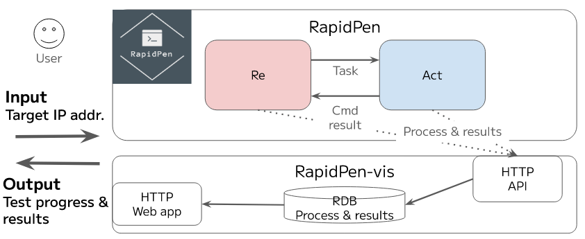
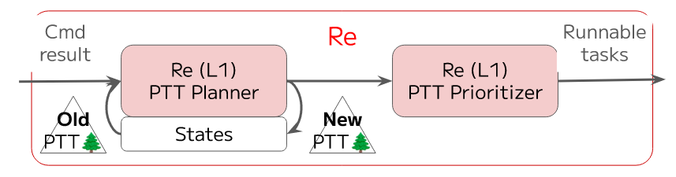
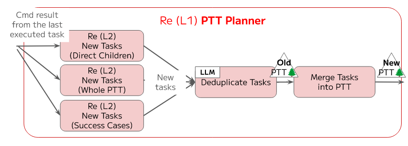
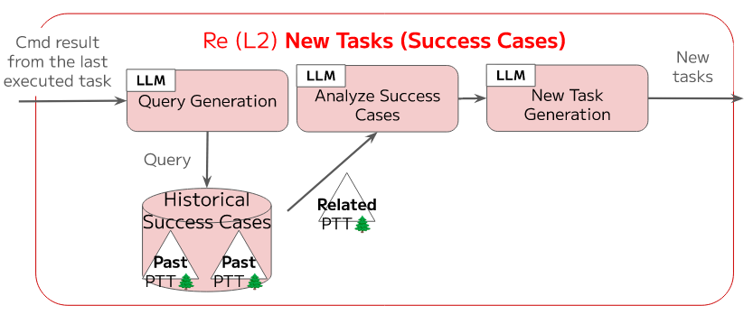
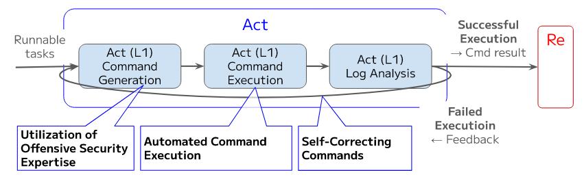

RapidPen：完全自动化的ip到shell渗透测试与基于llm的代理
RapidPen：完全自动化的ip到shell渗透测试与基于llm的代理
Based Information
| 类型 | 篇名 | 关键字 | 作者 | 年份 | 链接 |
|---|---|---|---|---|---|
| 利用LLM来实现自动化渗透; | RapidPen: Fully Automated IP-to-Shell Penetration Testing with LLM-based Agents | Penetration Testing; LLM-based Agents; |
Sho Nakatani | 20250223 | https://arxiv.org/abs/2502.16730 |
Important Information
提出一个全自动化的渗透测试框架，从目标 IP 地址开始，无需人工干预即可获取 shell 访问权限（IP-to-Shell）；
结合 LLM 的推理能力与检索增强生成（RAG）技术，实现快速、低成本的自动化渗透测试；
Contributions
Method
利用 ReAct 范式进行框架设计；并针对自身框架对 PTT 进行了扩展；（源自 PentestGPT 的扩展）
- Re（Reasoning）模块：负责任务规划和决策；
- Act（Acting）模块：执行具体命令并处理反馈；
扩展：
- 环境元数据：记录目标 IP、时间戳等上下文信息；
- Act 执行结果：每个任务节点存储命令执行历史（如命令字符串、退出码、日志摘要）；
- JSON 标准化：PTT 以 JSON 格式存储和交换，确保 LLM 处理的规范性，避免歧义；
PTT 动态生成，随着测试进展不断扩展或回溯；
RapidPen 的 ReAct 循环分为多层子模块
- Re（任务规划）：
- Re (L1) PTT Planner：根据当前任务结果生成新任务（如发现开放端口后触发漏洞扫描）。
- Re (L1) PTT Prioritizer：对任务优先级排序（如优先利用高危漏洞）。
- Act（命令执行）：
- Act (L1) Command Generation：基于 RAG 知识库生成具体命令（如调用 Metasploit 模块）。
- Act (L1) Command Execution：执行命令并捕获输出。
- Act (L1) Log Analysis：分析日志，决定重试、调整或终止任务。
交互流程：Re 模块根据 PTT 状态提出新任务 → Act 模块执行并反馈结果 → Re 模块更新 PTT → 循环直至获取 Shell 或失败。
RapidPen 使用两个专用 RAG 知识库提升效率
- Act (L1) Command Generation RAG：
- 数据源：148 份 HackTricks 文档（如 SMB、FTP 渗透技巧）。
- 作用：生成上下文相关的扫描/攻击命令（如
nmap --script=smb-vuln-*）。
- Re (L2) New Tasks (Success Cases) RAG：
- 数据源：历史成功的 PTT（如 Hack The Box “Blue” 机器的渗透路径）。
- 作用：通过检索相似成功案例，快速生成有效任务（如直接复用 MS17-010 攻击链）。
图示

图 1: RapidPen 的高级架构图，展示了用户输入和输出、Re 和 Act 模块，以及 RapidPen-vis，一个用于监控中间过程和最终报告的可视化工具。

图2： RapidPen 中的 Re 模块由 Re (L1) PTT 规划器和 Re (L1) PTT 优先级排序器子模块组成。 PTT 规划器负责扩展和维护 PTT 树，而 PTT 优先级排序器则确定下一个要执行的任务。

图3： Re (L1) PTT 规划器_处理上一个执行任务的命令结果，以在 PTT 中第2级(L2)生成新任务。 在合并到 PTT 中之前，使用基于 LLM 的方法对这些任务进行去重，从而将 PTT 从旧状态更新到新状态。

图4： Re (L2) 新任务生成_模块根据历史成功案例生成新任务。 此过程首先从上次执行的任务中提取命令结果。 大语言模型 (LLM) 查询相关的历史成功案例，然后对其进行分析以提取关键见解。 基于此分析，生成新的任务并将其集成到规划过程中。

图 5： Act (L1) 模块通过三个关键阶段处理可运行的任务：命令生成、执行和日志分析。 它利用攻击性安全专业知识来生成命令，自动化执行，并在必要时应用自我纠正机制。 成功执行会产生命令结果，而失败的执行则会触发反馈循环以改进。
Shortcome
- 成功率仅有 60%，且实验测试样例较少；
- 仅针对已存在的系统漏洞才有这样的成功率，且仅支持 TCP 协议基础上的漏洞测试；对新漏洞缺乏 IP-to-Shell 的能力；
- Fail-Fast 机制有待优化；
- 无法实现后期的漏洞深入利用（权限提升、横向移动等）；
- Web、UDP 方面的并不支持，局限性较大；（作者在未来展望中提到）
PS (2025/04/22)
PentestGPT，引入了 渗透测试任务树 (PTT) 的概念，它将整个渗透测试过程构建为一个属性树，其中每个节点代表一个任务（例如，端口扫描、漏洞测试、利用），边定义了任务之间推理或依赖关系的流程。 随着新任务的生成、完成或由于部分失败而需要回溯，树会动态地演变。
PTT 本质上是一个带标签的树（或属性多叉树），具有以下关键元素：
- 节点（任务），具有唯一标识符和可选的子节点；
- 属性，分配给每个节点，例如任务描述、当前状态和相关参数；
- 边，表示父子关系（例如，子任务扩展），它在多个细节级别构建渗透测试工作流程。